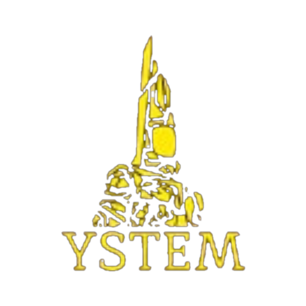

FIRST Tech Challenge
Y-TECH
YSTEM жобасы · командасы #29112
ENGINEERING · ROBOTICS · AI MENTORING

Қош келдіңіз, Y-TECH!
Біз FIRST Tech Challenge аясында инновациялық роботтар құрастыратын және инженерлік дағдыларды дамытатын командамыз. Сайтымызда командамыздың менторларымен байланысуға, AI ментордан кеңес алуға және пайдалы материалдарды табуға болады.
Команда туралы
Y-TECH — FIRST Tech Challenge бағдарламасына қатысатын жас инженерлер мен программистерден құралған #29112 нөмірлі командамыз. YSTEM жобасы аясында біз тек өз роботымызды жасаумен шектелмей, басқа жаңадан бастаған командаларға CAD, программалау және стратегия бойынша тегін менторлық ұсынамыз. Мақсатымыз — робототехника арқылы STEM білімін дамыту және Қазақстандағы FTC қауымдастығын кеңейту.
Команда
Менторлар
AI Ассистент
AI Ментор
FTC бойынша кез келген сұрағыңызды қойыңыз — робот дизайны, программалау, стратегия немесе ережелер.
Оқу материалдары